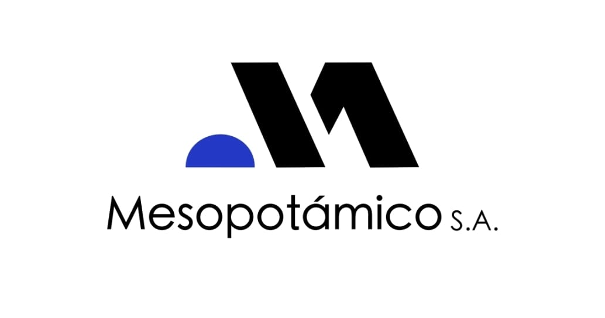

Seleccioná el formulario que necesitás completar.
Registro diario de actividades y novedades del turno.
Control de stock, equipamiento y elementos reglamentarios del móvil.
Registro de intervenciones y siniestros viales.